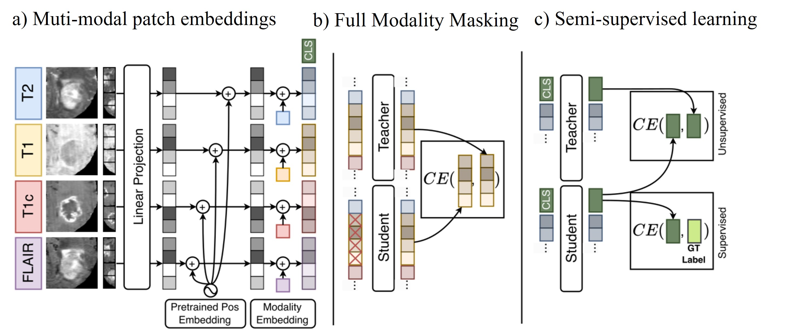

Small Pixel Features Recognition
Scenario: detect and track workers in construction videos. A worker is localized with a bounding box, assigned an ID, and then continuously tracked over time (similar to vehicle detection & tracking in traffic surveillance). This module compares a DINO-based detector with YOLOv8, focusing on far-field workers that occupy only a few pixels.
Why it matters
- Safety and risk monitoring: reliable worker localization is a prerequisite for zone intrusion alerts, proximity checks to hazards, and near-miss analysis.
- Operational analytics: persistent worker tracking supports counting, movement pattern analysis, and time-in-area measurements.
- Far-field cameras are common: many fixed site cameras cover large areas; workers appear tiny, so small-object sensitivity directly impacts usefulness.
Method overview (DINO vs. YOLOv8)
This module uses a DINO-based approach to detect workers as bounding boxes and then track them across frames. We compare it with YOLOv8 to highlight performance differences on small, distant targets.
Conceptually, DINO learns representations that preserve local details. DINO introduces a patch-level objective: the model is trained to predict features of masked regions from the visible patches through masked image modeling, which encourages learning fine-grained local content instead of only global semantics.
Intuition: the training behaves like a “fill-in-the-blank” task for images—part of the image is hidden, and the network must reconstruct or predict the missing region’s representation based on surrounding context. This helps the model remain sensitive to tiny visual cues (e.g., a few pixels of a distant worker).

Figure: Masked image modeling—hide a region and learn to predict it from the visible context (similar to fill-in-the-blank).

Figure: DINO architecture / training pipeline (illustration).
Strengths
- Strong small-object sensitivity: due to its training objective, DINO is more responsive to small patch-level cues, enabling detection of far-field workers that may be missed by YOLOv8.
- Less information loss: compared with many CNN backbones, DINOv3 representations are less prone to “washing out” tiny objects during early down sampling.
- Better coverage for fixed wide-angle cameras: improves worker detection in large scenes without needing zoomed-in cameras everywhere.
Limitations
- Tracking discontinuity: if a person disappears from the screen or is blocked by cover, and then reappears, the numbering/ID can become discontinuous because the model assigns a new embedding and a new ID.
- Occlusions and exits: when workers move behind obstacles or leave the frame, long-term identity preservation becomes difficult without a stronger re-identification strategy.
- Deployment complexity: achieving stable IDs usually requires integrating detection with tracking and re-ID logic (e.g., motion models + appearance matching), not just per-frame detection.
Demo videos
- YOLOv8 worker detection: https://youtu.be/rqu3NsjmnOE
- DINO-based worker detection (small pixel features): https://youtu.be/sjFn_gn97Nw